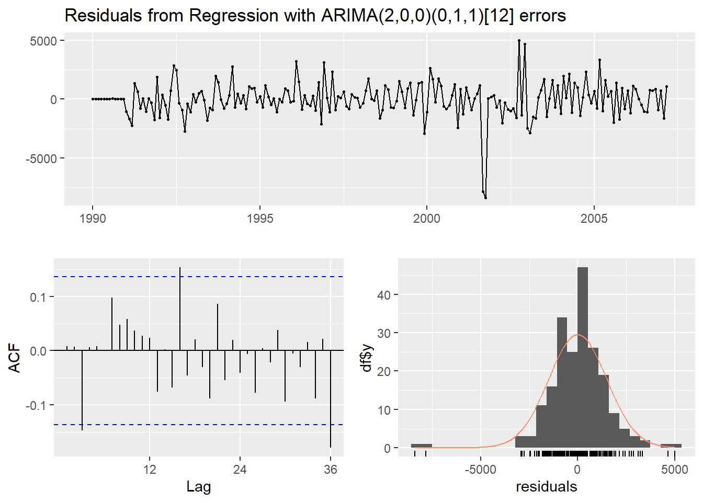
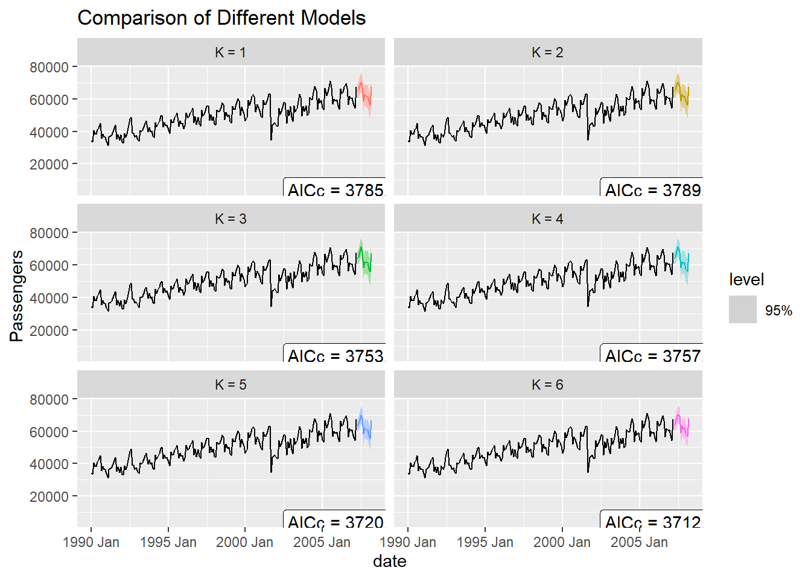
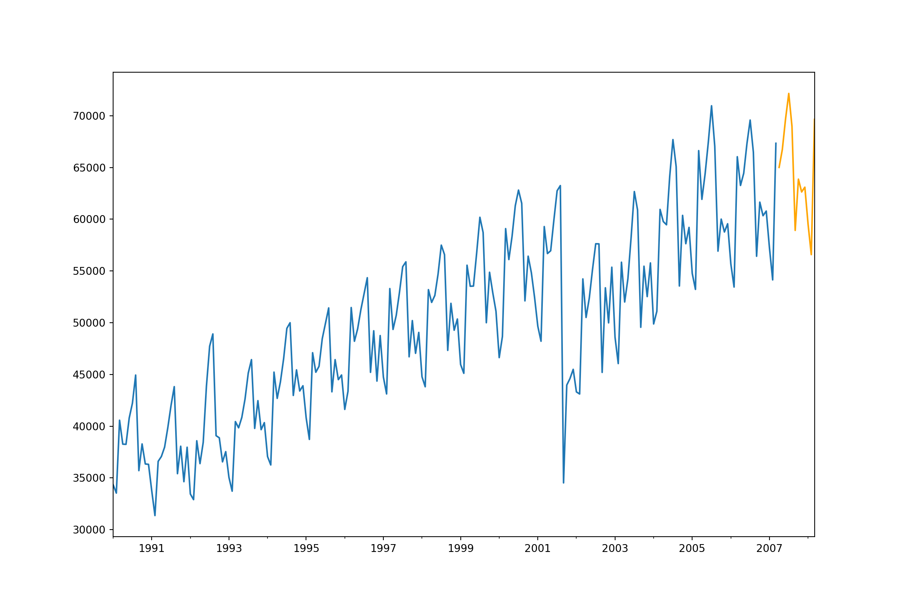

Chapter 6 Dynamic Regression Models
Predictor variables are used for variety of things. Previously we have seen them used for accounting for trend and for seasonality. However, we can also use external variables to help make our forecasts better. Variables such as holiday effects, sales promotions, economic factors, and changes in policy are just a few examples.
Predictor variables are incorporated in a regression and the time series component is applied to the errors from this regression model:
\[ Y_t = \beta_0 + \beta_1X_1 + \cdots + \beta_kX_k + Z_t \]
The \(Z_t\) in the above equation is where the time series (typically ARIMA) model is applied. This form of modeling has many names - dynamic regression, ARIMAX, transfer functions, just to name a few.
6.1 Intervention Variables
An intervention variable is a variable that contains discrete values that flag the occurrence of an event affecting the response series. These variables are used to model and forecast the series itself or analyze the impact of the specific event. For example, We can measure the impact of a previous sales promotion and forecast a future sales promotion's impact. We add these discrete variables in models to adjust the intercept of the model during the events.
The three most common types of intervention variables are:
Point interventions
Shift interventions
Ramp interventions
A point intervention is typically denoted with a binary variable that flags when event occurs by taking a value of 1 with all other values set to zero. By putting this variable in our model, the coefficient on the intervention variable in the regression measures the estimated impact of that intervention.
A step intervention is typically denoted with a binary variable that flags when an event occurs as well as the time period that the effects of the event last. For example, if you have a change in policy, you would have 0 values for dates before the policy change and values of 1 for every date after the change in policy. By putting this variable in our model, the coefficient on the intervention variable in the regression measures the estimated impact of that intervention's shift.
A ramp intervention is typically denoted by 0 values before an event and values that increase by 1 (1,2,3, etc.) starting with the event time point itself. By putting this variable in our model, the coefficient on the intervention variable in the regression measures the estimated slope of this new relationship after the event.
For our dataset we have a point intervention at September, 2001. We can easily create a binary variable that takes a value of 1 during that month and 0 otherwise. By using the xreg = option in the auto.arima function, we can add this intervention to our model as well as build out a seasonal ARIMA. We use the summary and checkresiduals functions to evaluate our model.
Sep11 <- rep(0, 207)
Sep11[141] <- 1
Full.ARIMA <- auto.arima(training, seasonal = TRUE, xreg = Sep11, method = "ML")
summary(Full.ARIMA)## Series: training
## Regression with ARIMA(2,0,0)(0,1,1)[12] errors
##
## Coefficients:
## ar1 ar2 sma1 drift xreg
## 0.7119 0.1369 -0.6626 125.6161 -11539.935
## s.e. 0.0709 0.0713 0.0579 22.6471 1150.963
##
## sigma^2 = 2442761: log likelihood = -1712.17
## AIC=3436.35 AICc=3436.8 BIC=3455.99
##
## Training set error measures:
## ME RMSE MAE MPE MAPE
## Training set -3.349234 1497.38 1030.214 -0.1299989 2.123044
## MASE ACF1
## Training set 0.3826493 0.008315115
##
## Ljung-Box test
##
## data: Residuals from Regression with ARIMA(2,0,0)(0,1,1)[12] errors
## Q* = 21.697, df = 21, p-value = 0.4171
##
## Model df: 3. Total lags used: 24We can see from the output above that our model now accounts for the outlier that we previously saw in our data. Notice how our model has changed slightly after accounting for this outlier. This will improve the forecasts going forward, even though we do not have any outliers in our validation dataset.
To forecast these values going forward, we need future values of our predictor variable. For this dataset, we have our Sep11 variable that we forecast to have values of 0 for each of the 12 observations we are forecasting for airline passengers. To do this we create another variable (of the same name) that has future values. This new variable is then put into the xreg = option inside of the forecast function. Notice how this forecast function comes from the forecast package with the input being the model we previously built. The forecast function is expecting a variable in the xreg = option with the same name as in our model.
## Point Forecast Lo 80 Hi 80 Lo 95 Hi 95
## Apr 2007 63955.27 61952.29 65958.25 60891.98 67018.57
## May 2007 65316.30 62857.59 67775.01 61556.03 69076.57
## Jun 2007 68554.32 65778.00 71330.63 64308.31 72800.32
## Jul 2007 71525.80 68534.61 74516.99 66951.16 76100.43
## Aug 2007 68990.75 65846.48 72135.01 64182.01 73799.48
## Sep 2007 58181.07 54925.92 61436.22 53202.75 63159.39
## Oct 2007 63003.05 59666.52 66339.58 57900.27 68105.83
## Nov 2007 61187.86 57791.11 64584.60 55992.98 66382.73
## Dec 2007 62406.11 58964.54 65847.68 57142.69 67669.53
## Jan 2008 58243.83 54768.77 61718.89 52929.18 63558.48
## Feb 2008 56374.88 52874.71 59875.05 51021.83 61727.92
## Mar 2008 68567.34 65048.31 72086.37 63185.45 73949.23autoplot(forecast::forecast(Full.ARIMA, xreg = Sep11, h = 12)) + autolayer(fitted(Full.ARIMA), series="Fitted") +
ylab("Airlines Passengers") +
geom_vline(xintercept = 2007.25,color="orange",linetype="dashed")
We can plot our forecasts just as we have done previously.
6.2 Predictor Variables
Most forecasting models also need to account for explanatory variables such as price, advertising spending, or income. These kinds of models can be called any of the following: dynamic regression, ARIMAX, transfer functions. Through the examples above, we have seen how to implement this in R.
However, there are often lagged variables (lags of the predictor variables) as well as (or instead of) immediate impacts of these variables. In other words, previous values of the predictor variables may still play a role in the current prediction of the target variable. The question becomes, how many lags of a variable need to be included in the model. There are multiple ways to evaluate how many lags of a predictor variable you need in a model.
The first, more theoretical approach, involves cross correlations and pre-whitening of series. This approach is time consuming, requires building a model for the predictor variables themselves, and is therefore best used for small numbers of predictor variables.
The second approach evaluates many difference combinations of lags of the predictor variable in many different models. These models are compared on a metric like AIC/BIC on a validation dataset to see which models the data best. This approach is more efficient, handles many variables much easier, and is similar in accuracy to the first approach.
For our model, the impact of September 11, 2001 was felt for many months (lag impacts). In the code below we add six lags as well as one seasonal lag (the first anniversary of September 11, 2001) to the model through the same xreg = option in auto.arima.
# Intervention Analysis with Lags
Sep11 <- rep(0, 207)
Sep11[141] <- 1
Sep11.L1 <- rep(0, 207)
Sep11.L1[142] <- 1
Sep11.L2 <- rep(0, 207)
Sep11.L2[143] <- 1
Sep11.L3 <- rep(0, 207)
Sep11.L3[144] <- 1
Sep11.L4 <- rep(0, 207)
Sep11.L4[145] <- 1
Sep11.L5 <- rep(0, 207)
Sep11.L5[146] <- 1
Sep11.L6 <- rep(0, 207)
Sep11.L6[147] <- 1
Anniv <- rep(0, 207)
Anniv[153] <- 1
Full.ARIMA <- auto.arima(training, seasonal = TRUE, xreg = cbind(Sep11, Sep11.L1, Sep11.L2, Sep11.L3, Sep11.L4, Sep11.L5, Sep11.L6, Anniv), method = "ML")
summary(Full.ARIMA)## Series: training
## Regression with ARIMA(2,0,0)(1,1,1)[12] errors
##
## Coefficients:
## ar1 ar2 sar1 sma1 drift Sep11
## 0.6298 0.2207 0.1926 -0.696 124.7589 -17400.854
## s.e. 0.0714 0.0726 0.1143 0.081 21.1667 1162.372
## Sep11.L1 Sep11.L2 Sep11.L3 Sep11.L4 Sep11.L5
## -12115.39 -8076.820 -7670.549 -4345.475 -2172.174
## s.e. 1271.31 1387.159 1427.354 1403.895 1271.249
## Sep11.L6 Anniv
## -751.1779 -2305.7922
## s.e. 1105.3273 998.2275
##
## sigma^2 = 1736411: log likelihood = -1673.71
## AIC=3375.42 AICc=3377.75 BIC=3421.24
##
## Training set error measures:
## ME RMSE MAE MPE MAPE
## Training set 1.06424 1235.597 944.956 -0.08204485 1.937638
## MASE ACF1
## Training set 0.3509823 0.007697329
##
## Ljung-Box test
##
## data: Residuals from Regression with ARIMA(2,0,0)(1,1,1)[12] errors
## Q* = 16.049, df = 20, p-value = 0.7136
##
## Model df: 4. Total lags used: 24From the output above, we see that the model produces white noise and does not appear to have any more intervention impacts in the dataset.
Forecasting in time series with only lagged values of the target variable is easy because of the recursive nature of the function - one prediction feeds into the next prediction. Forecasting with external variables is much trickier. For intervention variables it is easier since we should know future holiday, promotion, etc. values. However, some variables need forecasting. We could either use external estimate of future values or we might need to forecast future values ourselves.
To forecast this series, we need to have future values of these input variables. Luckily, for our variables, these are just 0 values. We still need to use the forecast function from the forecast package. This function also has an xreg = option where we need future values of these predictor variables. Ideally, these future values have the same name as the original predictor variables for the forecast function to work best. We can plot these updated forecasts as well as calculate the MAE and MAPE.
Sep11 <- rep(0, 12)
Sep11.L1 <- rep(0, 12)
Sep11.L2 <- rep(0, 12)
Sep11.L3 <- rep(0, 12)
Sep11.L4 <- rep(0, 12)
Sep11.L5 <- rep(0, 12)
Sep11.L6 <- rep(0, 12)
Anniv <- rep(0, 12)
forecast::forecast(Full.ARIMA, xreg = cbind(Sep11, Sep11.L1, Sep11.L2, Sep11.L3, Sep11.L4, Sep11.L5, Sep11.L6, Anniv), h = 12)## Point Forecast Lo 80 Hi 80 Lo 95 Hi 95
## Apr 2007 63937.41 62248.67 65626.15 61354.70 66520.11
## May 2007 65316.99 63321.23 67312.74 62264.74 68369.23
## Jun 2007 68441.09 66189.40 70692.78 64997.43 71884.75
## Jul 2007 71239.59 68817.87 73661.31 67535.88 74943.29
## Aug 2007 68660.78 66112.97 71208.59 64764.24 72557.32
## Sep 2007 58377.66 55736.68 61018.64 54338.63 62416.69
## Oct 2007 63394.58 60683.47 66105.69 59248.30 67540.87
## Nov 2007 61550.94 58786.70 64315.17 57323.40 65778.47
## Dec 2007 62572.18 59767.44 65376.91 58282.71 66861.65
## Jan 2008 58447.68 55611.95 61283.41 54110.80 62784.56
## Feb 2008 56242.81 53383.27 59102.35 51869.52 60616.09
## Mar 2008 68562.18 65684.33 71440.04 64160.88 72963.48autoplot(forecast::forecast(Full.ARIMA, xreg = cbind(Sep11, Sep11.L1, Sep11.L2, Sep11.L3, Sep11.L4, Sep11.L5, Sep11.L6, Anniv), h = 12)) + autolayer(fitted(Full.ARIMA), series="Fitted") +
ylab("Airlines Passengers") +
geom_vline(xintercept = 2007.25,color="orange",linetype="dashed")
# Calculate prediction errors from forecast
Full.ARIMA.error <- test - forecast::forecast(Full.ARIMA, xreg = cbind(Sep11, Sep11.L1, Sep11.L2, Sep11.L3, Sep11.L4, Sep11.L5, Sep11.L6, Anniv), h = 12)$mean
# Calculate prediction error statistics (MAE and MAPE)
Full.ARIMA.MAE <- mean(abs(Full.ARIMA.error))
Full.ARIMA.MAPE <- mean(abs(Full.ARIMA.error)/abs(test))*100
Full.ARIMA.MAE## [1] 1181.016## [1] 1.800296From the above output we see that although the MAE and MAPE have improved from the ARIMA model without accounting for September 11, but still not better than the exponential smoothing model.
6.3 Python Code for Dynamic Regression Models
import pandas as pd
import numpy as np
import matplotlib.pyplot as plt
import statsmodels.api as sm
from statsmodels.graphics import tsaplots
from statsmodels.graphics import tsaplots
from statsmodels.tsa.seasonal import seasonal_decompose
from statsmodels.tsa.seasonal import STL
from statsmodels.tsa.arima_model import ARMA
from statsmodels.tsa.arima_model import ARIMA
from statsmodels.tsa.statespace.sarimax import SARIMAX
from statsmodels.tsa.holtwinters import SimpleExpSmoothing, Holt, ExponentialSmoothing
import pmdarima as pm
usair = pd.read_csv("https://raw.githubusercontent.com/sjsimmo2/TimeSeries/master/usairlines.csv")
df=pd.date_range(start='1/1/1990', end='3/1/2008', freq='MS')
usair.index=pd.to_datetime(df)
training = usair.head(207)
test = usair.tail(12)
training['Sep11'] = 0 * 207## <string>:1: SettingWithCopyWarning:
## A value is trying to be set on a copy of a slice from a DataFrame.
## Try using .loc[row_indexer,col_indexer] = value instead
##
## See the caveats in the documentation: https://pandas.pydata.org/pandas-docs/stable/user_guide/indexing.html#returning-a-view-versus-a-copy## <string>:1: SettingWithCopyWarning:
## A value is trying to be set on a copy of a slice from a DataFrame
##
## See the caveats in the documentation: https://pandas.pydata.org/pandas-docs/stable/user_guide/indexing.html#returning-a-view-versus-a-copy## OLS Regression Results
## ==============================================================================
## Dep. Variable: Passengers R-squared: 0.014
## Model: OLS Adj. R-squared: 0.009
## Method: Least Squares F-statistic: 2.905
## Date: Thu, 07 Sep 2023 Prob (F-statistic): 0.0898
## Time: 23:48:37 Log-Likelihood: -2177.3
## No. Observations: 207 AIC: 4359.
## Df Residuals: 205 BIC: 4365.
## Df Model: 1
## Covariance Type: nonrobust
## ==============================================================================
## coef std err t P>|t| [0.025 0.975]
## ------------------------------------------------------------------------------
## Intercept 4.989e+04 626.612 79.618 0.000 4.87e+04 5.11e+04
## Sep11 -1.537e+04 9015.376 -1.704 0.090 -3.31e+04 2409.378
## ==============================================================================
## Omnibus: 11.449 Durbin-Watson: 0.287
## Prob(Omnibus): 0.003 Jarque-Bera (JB): 5.047
## Skew: 0.085 Prob(JB): 0.0802
## Kurtosis: 2.254 Cond. No. 14.4
## ==============================================================================
##
## Notes:
## [1] Standard Errors assume that the covariance matrix of the errors is correctly specified.model = pm.auto_arima(results.resid.dropna(), start_p = 0, start_q = 0, max_p = 5, max_q = 5, start_P = 0, start_Q = 0, max_D = 1, max_P = 2, map_Q = 2, seasonal = True, m = 12)## C:\PROGRA~3\ANACON~1\envs\R_Env2\lib\site-packages\pmdarima\arima\_auto_solvers.py:522: ModelFitWarning: Error fitting ARIMA(1,1,0)(2,0,1)[12] (if you do not want to see these warnings, run with error_action="ignore").
## Traceback:
## Traceback (most recent call last):
## File "C:\PROGRA~3\ANACON~1\envs\R_Env2\lib\site-packages\pmdarima\arima\_auto_solvers.py", line 506, in _fit_candidate_model
## fit.fit(y, X=X, **fit_params)
## File "C:\PROGRA~3\ANACON~1\envs\R_Env2\lib\site-packages\pmdarima\arima\arima.py", line 597, in fit
## self._fit(y, X, **fit_args)
## File "C:\PROGRA~3\ANACON~1\envs\R_Env2\lib\site-packages\pmdarima\arima\arima.py", line 518, in _fit
## fit, self.arima_res_ = _fit_wrapper()
## File "C:\PROGRA~3\ANACON~1\envs\R_Env2\lib\site-packages\pmdarima\arima\arima.py", line 508, in _fit_wrapper
## return arima, arima.fit(start_params=start_params,
## File "C:\PROGRA~3\ANACON~1\envs\R_Env2\lib\site-packages\statsmodels\tsa\statespace\mlemodel.py", line 704, in fit
## mlefit = super(MLEModel, self).fit(start_params, method=method,
## File "C:\PROGRA~3\ANACON~1\envs\R_Env2\lib\site-packages\statsmodels\base\model.py", line 563, in fit
## xopt, retvals, optim_settings = optimizer._fit(f, score, start_params,
## File "C:\PROGRA~3\ANACON~1\envs\R_Env2\lib\site-packages\statsmodels\base\optimizer.py", line 241, in _fit
## xopt, retvals = func(objective, gradient, start_params, fargs, kwargs,
## File "C:\PROGRA~3\ANACON~1\envs\R_Env2\lib\site-packages\statsmodels\base\optimizer.py", line 651, in _fit_lbfgs
## retvals = optimize.fmin_l_bfgs_b(func, start_params, maxiter=maxiter,
## File "C:\PROGRA~3\ANACON~1\envs\R_Env2\lib\site-packages\scipy\optimize\_lbfgsb_py.py", line 199, in fmin_l_bfgs_b
## res = _minimize_lbfgsb(fun, x0, args=args, jac=jac, bounds=bounds,
## File "C:\PROGRA~3\ANACON~1\envs\R_Env2\lib\site-packages\scipy\optimize\_lbfgsb_py.py", line 365, in _minimize_lbfgsb
## f, g = func_and_grad(x)
## File "C:\PROGRA~3\ANACON~1\envs\R_Env2\lib\site-packages\scipy\optimize\_differentiable_functions.py", line 285, in fun_and_grad
## self._update_fun()
## File "C:\PROGRA~3\ANACON~1\envs\R_Env2\lib\site-packages\scipy\optimize\_differentiable_functions.py", line 251, in _update_fun
## self._update_fun_impl()
## File "C:\PROGRA~3\ANACON~1\envs\R_Env2\lib\site-packages\scipy\optimize\_differentiable_functions.py", line 155, in update_fun
## self.f = fun_wrapped(self.x)
## File "C:\PROGRA~3\ANACON~1\envs\R_Env2\lib\site-packages\scipy\optimize\_differentiable_functions.py", line 137, in fun_wrapped
## fx = fun(np.copy(x), *args)
## File "C:\PROGRA~3\ANACON~1\envs\R_Env2\lib\site-packages\statsmodels\base\model.py", line 531, in f
## return -self.loglike(params, *args) / nobs
## File "C:\PROGRA~3\ANACON~1\envs\R_Env2\lib\site-packages\statsmodels\tsa\statespace\mlemodel.py", line 939, in loglike
## loglike = self.ssm.loglike(complex_step=complex_step, **kwargs)
## File "C:\PROGRA~3\ANACON~1\envs\R_Env2\lib\site-packages\statsmodels\tsa\statespace\kalman_filter.py", line 983, in loglike
## kfilter = self._filter(**kwargs)
## File "C:\PROGRA~3\ANACON~1\envs\R_Env2\lib\site-packages\statsmodels\tsa\statespace\kalman_filter.py", line 903, in _filter
## self._initialize_state(prefix=prefix, complex_step=complex_step)
## File "C:\PROGRA~3\ANACON~1\envs\R_Env2\lib\site-packages\statsmodels\tsa\statespace\representation.py", line 983, in _initialize_state
## self._statespaces[prefix].initialize(self.initialization,
## File "statsmodels\tsa\statespace\_representation.pyx", line 1373, in statsmodels.tsa.statespace._representation.dStatespace.initialize
## File "statsmodels\tsa\statespace\_representation.pyx", line 1362, in statsmodels.tsa.statespace._representation.dStatespace.initialize
## File "statsmodels\tsa\statespace\_initialization.pyx", line 288, in statsmodels.tsa.statespace._initialization.dInitialization.initialize
## File "statsmodels\tsa\statespace\_initialization.pyx", line 406, in statsmodels.tsa.statespace._initialization.dInitialization.initialize_stationary_stationary_cov
## File "statsmodels\tsa\statespace\_tools.pyx", line 1206, in statsmodels.tsa.statespace._tools._dsolve_discrete_lyapunov
## numpy.linalg.LinAlgError: LU decomposition error.
##
## warnings.warn(warning_str, ModelFitWarning)| Dep. Variable: | y | No. Observations: | 207 |
|---|---|---|---|
| Model: | SARIMAX(1, 1, 0)x(2, 0, [1], 12) | Log Likelihood | -1863.806 |
| Date: | Thu, 07 Sep 2023 | AIC | 3739.612 |
| Time: | 23:48:51 | BIC | 3759.580 |
| Sample: | 0 | HQIC | 3747.688 |
| - 207 | |||
| Covariance Type: | opg |
| coef | std err | z | P>|z| | [0.025 | 0.975] | |
|---|---|---|---|---|---|---|
| intercept | -329.5035 | 126.168 | -2.612 | 0.009 | -576.788 | -82.219 |
| ar.L1 | -0.2218 | 0.065 | -3.425 | 0.001 | -0.349 | -0.095 |
| ar.S.L12 | 0.3887 | 0.181 | 2.148 | 0.032 | 0.034 | 0.743 |
| ar.S.L24 | 0.4842 | 0.160 | 3.017 | 0.003 | 0.170 | 0.799 |
| ma.S.L12 | 0.1300 | 0.203 | 0.641 | 0.522 | -0.268 | 0.528 |
| sigma2 | 4.039e+06 | 2.62e+05 | 15.421 | 0.000 | 3.53e+06 | 4.55e+06 |
| Ljung-Box (L1) (Q): | 0.04 | Jarque-Bera (JB): | 575.74 |
|---|---|---|---|
| Prob(Q): | 0.84 | Prob(JB): | 0.00 |
| Heteroskedasticity (H): | 1.70 | Skew: | 0.02 |
| Prob(H) (two-sided): | 0.03 | Kurtosis: | 11.19 |
Warnings:
[1] Covariance matrix calculated using the outer product of gradients (complex-step).
6.3.1 Intervention Variables
#training['Sep11'] = 0 * 207
#training['Sep11'][140] = 1
#model3 = SARIMAX(training['Passengers'], exog = training['Sep11'], order = (1,0,1), seasonal_order = (0,1,1,12), trend = 't').fit()
#model3.summary()
#plt.cla()
#fcast2 = model3.forecast(12)
#ax = training["Passengers"].plot(figsize=(12,8))
#fcast2.plot(ax = ax,color = "orange")
#plt.show()6.3.2 Predictor Variables
## <string>:1: SettingWithCopyWarning:
## A value is trying to be set on a copy of a slice from a DataFrame.
## Try using .loc[row_indexer,col_indexer] = value instead
##
## See the caveats in the documentation: https://pandas.pydata.org/pandas-docs/stable/user_guide/indexing.html#returning-a-view-versus-a-copy## <string>:1: SettingWithCopyWarning:
## A value is trying to be set on a copy of a slice from a DataFrame
##
## See the caveats in the documentation: https://pandas.pydata.org/pandas-docs/stable/user_guide/indexing.html#returning-a-view-versus-a-copytraining['Sep11_L1'] = 0 * 207
training['Sep11_L1'][141] = 1
training['Sep11_L2'] = 0 * 207
training['Sep11_L2'][142] = 1
training['Sep11_L3'] = 0 * 207
training['Sep11_L3'][143] = 1
training['Sep11_L4'] = 0 * 207
training['Sep11_L4'][144] = 1
training['Sep11_L5'] = 0 * 207
training['Sep11_L5'][145] = 1
training['Sep11_L6'] = 0 * 207
training['Sep11_L6'][146] = 1
training['Anniv'] = 0 * 207
training['Anniv'][152] = 1
X = np.array((training['Sep11'],
training['Sep11_L1'],
training['Sep11_L2'],
training['Sep11_L3'],
training['Sep11_L4'],
training['Sep11_L5'],
training['Sep11_L6'],
training['Anniv']))
X = np.transpose(X)
model4 = SARIMAX(training['Passengers'], exog = X, order = (2,0,0), seasonal_order = (1,1,1,12), trend = 't').fit()
model4.summary()| Dep. Variable: | Passengers | No. Observations: | 207 |
|---|---|---|---|
| Model: | SARIMAX(2, 0, 0)x(1, 1, [1], 12) | Log Likelihood | -1758.130 |
| Date: | Thu, 07 Sep 2023 | AIC | 3544.260 |
| Time: | 23:48:53 | BIC | 3590.082 |
| Sample: | 01-01-1990 | HQIC | 3562.813 |
| - 03-01-2007 | |||
| Covariance Type: | opg |
| coef | std err | z | P>|z| | [0.025 | 0.975] | |
|---|---|---|---|---|---|---|
| drift | 9.7333 | 1.411 | 6.900 | 0.000 | 6.969 | 12.498 |
| x1 | -1.674e+04 | 923.884 | -18.116 | 0.000 | -1.85e+04 | -1.49e+04 |
| x2 | -1.093e+04 | 922.850 | -11.842 | 0.000 | -1.27e+04 | -9119.746 |
| x3 | -7800.0000 | 728.167 | -10.712 | 0.000 | -9227.182 | -6372.818 |
| x4 | -8401.5000 | 1100.215 | -7.636 | 0.000 | -1.06e+04 | -6245.118 |
| x5 | -5819.9999 | 906.614 | -6.419 | 0.000 | -7596.931 | -4043.069 |
| x6 | -4020.0003 | 916.580 | -4.386 | 0.000 | -5816.464 | -2223.537 |
| x7 | -3335.9975 | 611.058 | -5.459 | 0.000 | -4533.650 | -2138.345 |
| x8 | -5209.9962 | 789.594 | -6.598 | 0.000 | -6757.571 | -3662.421 |
| ar.L1 | 0.4425 | 0.061 | 7.239 | 0.000 | 0.323 | 0.562 |
| ar.L2 | -0.0244 | 0.059 | -0.415 | 0.678 | -0.140 | 0.091 |
| ar.S.L12 | -0.5652 | 0.145 | -3.894 | 0.000 | -0.850 | -0.281 |
| ma.S.L12 | 0.4883 | 0.157 | 3.104 | 0.002 | 0.180 | 0.797 |
| sigma2 | 2.344e+06 | 1.636 | 1.43e+06 | 0.000 | 2.34e+06 | 2.34e+06 |
| Ljung-Box (L1) (Q): | 12.50 | Jarque-Bera (JB): | 263.80 |
|---|---|---|---|
| Prob(Q): | 0.00 | Prob(JB): | 0.00 |
| Heteroskedasticity (H): | 1.10 | Skew: | -1.27 |
| Prob(H) (two-sided): | 0.71 | Kurtosis: | 8.10 |
Warnings:
[1] Covariance matrix calculated using the outer product of gradients (complex-step).
[2] Covariance matrix is singular or near-singular, with condition number 6.4e+21. Standard errors may be unstable.
#lag_test=[4,5,6,7,8,9,10,11,12,13]
#for x in lag_test:
# sm.stats.acorr_ljungbox(model4.resid, lags=[x], model_df=2)## <string>:1: SettingWithCopyWarning:
## A value is trying to be set on a copy of a slice from a DataFrame.
## Try using .loc[row_indexer,col_indexer] = value instead
##
## See the caveats in the documentation: https://pandas.pydata.org/pandas-docs/stable/user_guide/indexing.html#returning-a-view-versus-a-copytest['Sep11_L1'] = 0 * 12
test['Sep11_L2'] = 0 * 12
test['Sep11_L3'] = 0 * 12
test['Sep11_L4'] = 0 * 12
test['Sep11_L5'] = 0 * 12
test['Sep11_L6'] = 0 * 12
test['Anniv'] = 0 * 12
X_test = np.array((test['Sep11'],
test['Sep11_L1'],
test['Sep11_L2'],
test['Sep11_L3'],
test['Sep11_L4'],
test['Sep11_L5'],
test['Sep11_L6'],
test['Anniv']))
X_test = np.transpose(X_test)
plt.cla()
fcast4 = model4.forecast(12, exog = X_test)
ax = training["Passengers"].plot(figsize=(12,8))
fcast4.plot(ax = ax,color = "orange")
plt.show()
## 1.4065001651788902